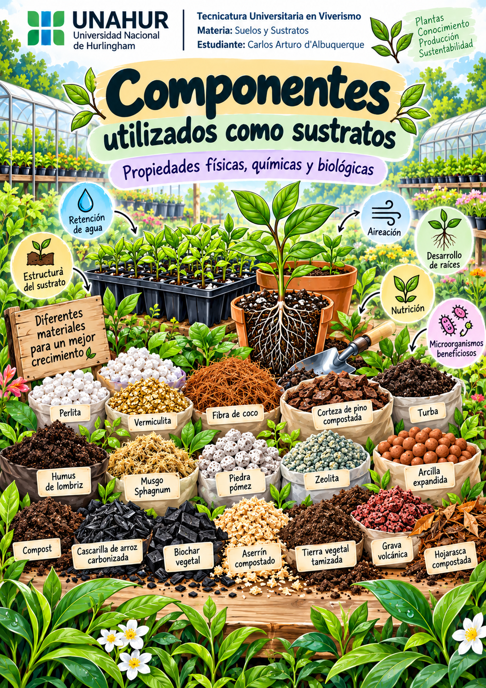

UNAHUR · TECNICATURA UNIVERSITARIA EN VIVERISMO
SUELOS Y SUSTRATOS PARTE II
COMPONENTES
UTILIZADOS COMO
SUSTRATO I
Un pequeño vivero de conocimiento.
Explorá, compará y repasá lo que necesita cada raíz para crecer.
10 fichas · 4 miradas por material · A tu ritmo

Plantas · Conocimiento · Producción · Sustentabilidad💧 Retención de agua🌬 Aireación🌿 Desarrollo de raíces🧪 Nutrición🦠 Vida microbiana
01 / EXPLORAR
El índice de tu vivero
Los materiales, en el orden original.
0 de 10 fichas estudiadas
Ver continuación del índice · Componentes 11–20
Figuran en el índice original. Sus fichas no están incluidas en las imágenes adjuntas de esta parte.
02 / CONECTAR IDEAS
Dos materiales, frente a frente
Encontrá diferencias y recordá sus usos.
03 / HACER MEMORIA
Lo que sabés
también crece.
Preguntas basadas en las fichas.
Respondé y descubrí la explicación.
Tu recorrido queda guardado
Marcá las fichas que estudiaste y retomá cuando quieras desde este navegador. El progreso es personal y se guarda en este dispositivo.